| [ Team LiB ] |
|
10.7 Feed-Forward Controller DesignRemember that we are working in deviation variables. Assume that we are not making a setpoint change, so r(s) = 0. Since we do not want the output variable to change, that is equivalent to saying that we desire y(s) = 0. From Equation (10.6) we can see that the only way to assure y(s) = 0 is for the following relationship to hold 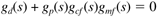 In this expression all the transfer functions are determined for a particular system, except for the feed-forward controller, gcf(s). Solving Equation (10.7) for gcf(s), we find 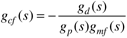 If we make the simplifying assumption that the disturbance measurement has no dynamics, then 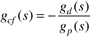 Notice that Equation (10.9) requires the inverse of the process model. Clearly, there will be problems if the process model has RHP zeros, or if the process time delay is greater than the disturbance time delay. The use of Equation (10.9) as a feed-forward design equation is shown in Examples 10.1–10.4. Example 10.1: First-Order Process and Disturbance Transfer FunctionsConsider the first-order process and disturbance transfer functions 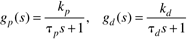 The feed-forward control law, from Equations (10.9) and (10.10), is 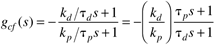 which is simply a lead-lag controller. Most control systems have feed-forward controllers that are of lead-lag form. Numerical ExampleHere we study the case where kd = kp = 1 and td = tp = 5 minutes. If we use the IMC-based PI procedure for feedback control, we find that tI = 5 and kc = 2 for l = 2.5 minutes. We compare the disturbance rejection of feedback-only with feed-forward/feedback control in Figure 10-14 for a unit step change in the load disturbance at t = 0. The feed-forward controller is a static controller with kcf = 1 for this case. Notice that the feed-forward controller implements an immediate change in the manipulated input to counteract the disturbance. Figure 10-14. Comparison of feed-forward/feedback with feedback-only for numerical example.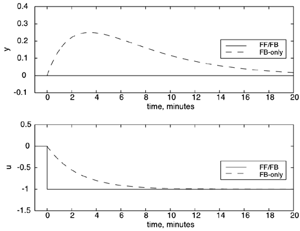 Example 10.2: First-Order + Dead Time Process and Disturbance Transfer FunctionsConsider the transfer functions 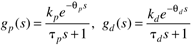 The feed-forward control law, from Equations (10.9) and (10.12), is 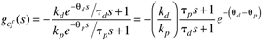 which is simply a lead-lag feed-forward controller with a time delay. The main thing that we notice about Equation (10.13) is that qd qp is required for the controller to be realizable. If qp > qd, we cannot have a time-delay term in the feed-forward controller and must accept the fact that we cannot have perfect feed-forward control, even if the models are perfect. Example 10.3: Process Higher Order than Disturbance Transfer FunctionConsider the following transfer functions: 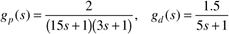 The feed-forward controller is 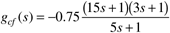 Since Equation (10.15) is improper, it is not physically realizable. We could simply add a first-order filter, perhaps something like 1/(s + 1), to make the feed-forward controller second order over second order. Perhaps the simplest thing to do is to make the numerator term first order. Most likely, we would use 18s + 1 to approximate the numerator to arrive at the lead-lag controller 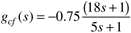 Numerical SimulationAssume that an IMC-based PID controller is used for feedback control. With l = 9, we find (from Table 9-1) that kc = 1, tI = 18, and tD = 2.5. Figure 10-15 compares the closed-loop response of the simplified feed-forward/feedback [Equation (10.16)] with feedback-only to a unit step change in load disturbance at t = 0. Although the feed-forward/feedback control is not perfect, the performance is substantially better than feedback only control. This performance is achieved by the initial manipulated variable action that is characteristic of lead-lag feed-forward controllers with a numerator lead time constant that is greater than the denominator lag time constant (see the lead-lag transfer function behavior in Chapter 3). Figure 10-15. Comparison of feed-forward/feedback with feedback-only.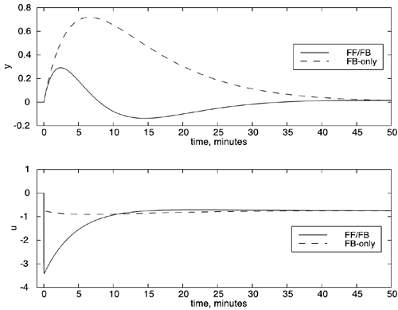 Example 10.4: Process Has Inverse Response, Disturbance Does NotConsider the process and disturbance transfer functions 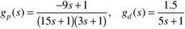 The feed-forward controller is 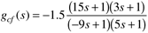 Notice that Equation (10.18) has a RHP pole and is therefore unstable. We must factor RHP zeros from the process transfer function before designing a feed-forward controller. In all likelihood, we would neglect the dynamic part and use only a static feed-forward controller, as shown in Equation (10.19) below. Static Feed-Forward ControlOften, we will be satisfied to neglect the differences in the dynamics between a process and a disturbance, and to simply design a static feed-forward compensator, 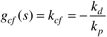 This will get us the majority of the performance improvement over feedback-only control. In the next section, we show feed-forward control in the IMC structure. |
| [ Team LiB ] |
|